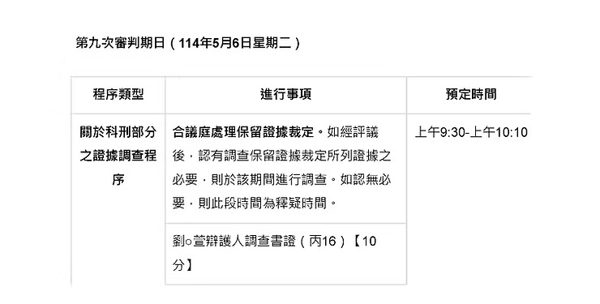

DEFENDANT TESTIMONY · DAY 9
監所關注小組原始紀錄護童行動聯盟重製導讀
第九次審判期日
剴剴案國民法官庭審紀錄｜2025年5月6日（二）
同一場科刑調查，兩名被告如何描述責任、知情、刪除紀錄與犯後態度，必須逐句放回證據界線。

本頁涉及兒童不當對待、死亡與量刑資料。102組問答依監所關注小組 DAY9 公開紀錄及其5頁PDF表格重製；原文可見疑似錯字或口語轉錄，完整問答區不自行改寫。被告陳述不等於法院認定，藝術主視覺亦不是證據影像。
第九日庭審速覽
上午依序訊問劉彩萱與劉若琳，範圍涵蓋生活與工作背景、責任承認或否認、法會與和解、對孩子傷勢的認知、刪除紀錄及犯後態度。
今天的關鍵，不是把兩份說法混成一份
本頁分別保留兩名被告的回答，再從責任、知情、刪除紀錄、法會、角色與修復等七個主題互相勾稽；每一個落差都回到原問答，不替法院判定可信度。
09:33 到 14:10｜程序如何推進
- 續行審理・訊問劉彩萱
辯護人先問生活史、經濟、法會、和解與認罪原因；檢察官再問托育經驗、收入、通報、急診、Mira與陳述變化。
- 休庭
10:37再入庭，由國民法官、受命法官與審判長接續詢問。
- 訊問劉若琳
辯護人問法會、鑑定報告、刪除LINE、工作壓力與角色；檢察官及法官追問否認犯行、知情與介入。
- 休庭
11:31再入庭，續由國民法官、受命法官與審判長詢問。
- 上午休庭
14:10入庭；下午處理訴訟參與代理人意見陳述與延押庭，原始紀錄註明「下午未參與」。
四條閱讀線｜先分清楚陳述屬性
背景與動機
收入、負債、家庭互動與工作壓力都由本人回答，須與文件及其他證人分開核對。
承認、否認與改口
承認綁縛、否認犯行、稱被誤會、承認先前說謊，分屬不同範圍與時間。
法會、刪除與和解
宗教儀式、刪除紀錄、對家屬聯繫及金錢準備不能合併成單一「悔意」。
異議與回答空白
法院制止量刑意見問題時，被告回答欄保持空白，不以辯護人或審判長的話代填。
劉彩萱證詞｜從經濟動機到責任承認
共73組問答。以下先整理庭上自述脈絡，完整原句仍置於問答區。
她稱112年9月至12月每月5萬多，是人生收入最多的時候；未完整求救或通報，原因包括怕不再派案與失去收入。
她承認警方、檢察官偵訊及徐醫師鑑定時曾未說真話，理由包括害怕刑事責任與不敢面對。
稱法會12天每天參與；30萬元由兒盟款項、劉若琳借款與宮主減收各10萬元構成，並稱曾請律師接觸家屬但家屬無意願。
在審判長追問下，從「對不起，我錯了」進一步回答「應該說是我造成的」，並稱造成孩子痛苦與死亡是自己的錯。
「應該說是我造成的。」— DAY9・審判長詢問劉彩萱
劉若琳證詞｜知情範圍、刪除紀錄與持續否認
共29組問答。她談到法會、鑑定報告、LINE紀錄、親屬與工作壓力，也持續否認犯行。
稱原先只看到頭部與餵食方式，醫師以圖示逐項說明後才知道全身傷勢，並後悔沒有多問姐姐、多看孩子。
承認對話內容有不適當之處，也承認是自己刪除，表示從中學到不應刪除紀錄。
稱自己有教保員證照且為登記者，同時描述婆家事業與親屬用人壓力，否認自己必然是主導者。
稱澡盆事件使她被誤會是共犯；面對檢察官追問時仍回答只承認過失傷人，並稱「我真的沒有打他」。
「是，我真的沒有打他。」— DAY9・檢察官訊問劉若琳
劉彩萱 × 劉若琳｜證詞比對專區
每個來源標籤可直達完整問答；每張被引用的問答卡也會生成返回本表的反向連結，形成雙向勾稽。
同一主題，分別回到兩人的原句
並列只揭示一致、互補或落差，不把兩份自述視為已獲採信的事實。
比對主題劉彩萱原問答劉若琳原問答證據界線
收入、案源與工作角色
C04｜怕排不到孩子C09｜收入最高時期C40｜未通報原因C41｜未完整求救
自述脈絡兩人都談到工作或收入壓力，但收入、案源、登記與實際決策權仍須與客觀紀錄分開核對。
法會目的、資金與告知
C52｜雙重目的C70｜30萬元來源C72｜需要妹妹協助C73｜稱曾說明超渡
R01｜宮主說法與30萬元R02｜稱未說明原因R21｜借10萬元R22｜有時參與
直接落差劉彩萱稱曾告知要幫孩子超渡；劉若琳回答「沒有」說明原因。兩段並列，不替法院決定何者可信。
坦承、隱瞞與刪除紀錄
C23｜偵訊未說真話C25｜鑑定時仍說謊C50｜承認不夠坦誠C62｜對家人與律師隱瞞
各自承認一人承認多個階段未坦白，一人承認自行刪除對話；兩者的內容、時間與法律評價不能合併。
對傷勢與孩子狀態的認知
C46｜急診醫師說法C47｜否認急診陳述C51｜中午後活動力C53｜稱庭上才知死亡風險
R03｜稱只看到頭與餵食R15｜看傷勢不清楚R16｜開庭前未細看R17｜仍否認犯行
各自知情範圍這些是兩人的自我描述；傷勢、死因與可察覺性須回到醫療證詞、影像及法院認定。
照顧經驗、主導與影響關係
C03｜轉做托育C29｜幼兒園地點C30｜三姊妹經營C43｜其他兒童未綁縛
R08｜否認主導R09｜教保員證照R13｜稱澡盆個案造成誤會
角色爭點證照、登記、親屬壓力與主導感受各屬不同事實；不能只以其中一項決定實際控制或參與程度。
責任承認、否認與悔意
C14｜疏文中的傷害C15｜承認綁縛C23｜承認先前未說真話C68｜「是我造成的」C69｜「是我的錯」
R13｜稱被誤會為共犯R17｜「我真的沒有打他」R18｜行為應修正R19｜當時覺得合理R20｜沒有想那麼多
核心落差劉彩萱在庭上轉向承認造成傷害；劉若琳仍否認犯行。認罪、否認、悔意與責任範圍須逐項評價。
犯後修復是否成立
C19｜稱誠心道歉C21｜家屬無和解意願C22｜保險準備金C69｜庭上悔意C70｜法會資金
R01｜法會敘述R02｜稱未說明目的R21｜借款R22｜參與頻率R24｜其他家人未參與
不能合併宗教儀式、金錢支出、庭上悔意、向家屬道歉與家屬接受修復是不同事項，不能互相替代。
量刑鑑定背景另可對照 DAY8 Q46｜責任不下修 與 DAY8 Q59｜條件式復歸；DAY8鑑定意見不取代DAY9被告回答。
完整訊問｜左問右答重製
桌機採雙欄，手機依序呈現「問題→回答」。問答文字及可見換行依原PDF表格保留；疑似錯字不自行更正。唯一未由被告回答的量刑問題，明確標示程序裁定。
顯示 102 組問答
111年間是在家製作傳統小吃，收入如何？
一般般
具體一點
有（訂）單就有收入，一個月有幾張單的，平均大概1萬，最多是端午節有1萬7，這是平均所得，兩人（和劉若
琳）平分之後的
為何轉做托育？
有照顧妹妹小孩，友人也建議
為何沒堅持拒絕帶A童？
因為1.床位問題，怕以後排小孩會比較難排、2.沒有接到案子，收托減少，收入就會減少
111年到112年4月有負債嗎？
自己的償完了，先生的不太清楚，我沒有能力扛，不過問
為何負債？
先生用我名義借貸
多少錢？怎麼還？
大概本金百萬以上，和銀行談分期
從兒子高中開始，不太記得了
房子是誰的，要繳房租嗎？
是姐姐的房子，欠一年多，10來萬，姐姐沒有跟我要，但希望能盡可能還，不要欠
111年前作小吃時的收入？
111年前大概3萬多，111年～112年4月，1萬多。112年9月～12月，5萬多，是人生收入最多的時候
若兒福聯盟說照顧兒童是緣分，不會不派案，那妳會
敢說了吧？
是
疏文是誰擬的？為何？
本來只要在紙上寫的，宮主女兒建議我先打出來看看合不合適，才會寫上去
用意是什麼？
本來是希望助A童往生淨土，其他信重建議可以寫些其他訴求，最主要是想請仙佛帶A童的西方極樂世界
為何用劉若琳的手機傳？
12月24日當日手機就被警方扣了
疏文寫：「阿姨所犯下的疏失」，妳想的是什麼？
開壇時向佛祖稟報，圓壇後燒掉
對他造成的傷害，讓他失去寶貴生命
綁他也算嗎？
是
疏文內容有告訴任何人嗎？
沒有
法會誰安排的？誰建議的？
宮主娘建議的
一共辦了幾天？每天都有去嗎？
12天，天天都有參與
是誠心想道歉嗎？
是
為何沒跟任何人講？
沒有勇氣
在看守所請辯護人去談和解，律師是怎麼跟妳回報
的？
找家屬和解，說家屬沒有意願
談和解的資金來源？
我有保險習慣，有請辯護人去問保險員，解除價值準備，可以拿到多少，回覆說是80-100萬元
有承認綁縛、罰站，但不承認有虐待？在警方和檢察
官偵訊時也沒有說真話，現在為何承認？
是。內心的愧疚日增，沒有日減。不敢說真話是因為覺得刑事責任很可怕
現在不覺得了嗎？
還是會，但很自責
去年10月跟徐醫師鑑定團隊還是說謊嗎？
是，不敢面對
妳的宗教信仰會怎麼認為？
輪迴
A童有一天會討報嗎？
我不知道
宗教信仰是認罪原因之一嗎？
是
和劉若琳經營幼兒園的地點？
4樓1號、6號1樓，兩邊打通，後再隔開
三姊妹共同經營的嗎？
是
收哪些幼兒？
從0歲到大班，10多人
費用價格？
每個月每位幼兒收1萬元
妳算是有經驗的，遇到幼兒哭鬧調皮不符從要怎麼
做？
安撫，然後回報家長
和兒盟的合作？
第一次，當年的5月
也是準備出養的嗎？
是，但後來媽媽捨不得就接回去了
為何和兒盟合作？
宮廟女兒、友人賴小姐自己帶勵馨的孩子，有建議我，所以我有打電話去勵馨問，說目前沒有小孩，可以先跑程
序（在宅居服申請），另外也提供給我一些其他機構，所以我就主動聯絡，第二個就聯繫兒福聯盟
受過的訓練？
以幼兒為主，以照顧他們的需求為主
A童算是「高需求」幼兒嗎？
沒聽過
自己照顧的幼兒會自撞是不好的？
當時是這樣覺得
有通報陳社工嗎？
沒有，怕不再給小孩
答辯人主張A童難照顧，有完整求救嗎？
沒有，怕失去收入
有對其他兒童綁縛、包起來等嗎？
沒有
在A童身上的不法手段是幼兒照顧的教學嗎？
不是
1天1千元會否太少？
是
112年12月24日是妳送去萬芳醫院，醫院有請妳聯絡A
童家人嗎？
是我送去的，可聯絡窗口社工，沒辦法聯絡家屬
有什麼感覺？
緊張感，心跳加快，我不知道
妳跟急診醫生說12月23日食慾、活動都正常？
我記得我沒有跟醫生接觸到，只有警察問我有沒有聯絡到了？
所以急診黃醫師說的不對嗎？
不知道，我一直在聯絡社工，她說她不一定到，但會聯絡家屬
12月26日Mira作證說，你和大姊的兒子去找Mira說不
要跟警察亂說，就說沒看到，有這件事嗎？
沒有，我跟她說，看到什麼就說什麼，不知道就說不知道
對急診黃醫師Mira的說法，有妨礙偵查的動作嗎？
有吧，不夠坦誠、勇敢
跟辯護人說A童中午以後活動力不佳？
有
疏文內容是想要避免牢獄之災，還是送A童引渡到往
生之地？
都有吧
妳說到審判中聽呂立醫師講，才知道會造成小孩死
亡？
我是這麼認為
那在疏文裡所說回答辯護人的呢？
也是
就妳所承認的三條罪是10年1月到無期徒刑，你自己
的意見呢？
被告回答欄空白。
辯護人異議，量刑不該由當事人來說審判長裁定異議成立，量刑是法院的工作
兒福聯盟有說多久會找到出養嗎？
沒有，我不知道
預期會和A童相處多久？
沒有辦法預期
妳對A童照顧的疏失不會擔心排不到床位？
當時沒有想那麼多
辯護人沒讓妳看過鑑定報告嗎？
有，但是沒有仔細看
案發後有跟其他家人說明情形？
忙於法會，沒有什麼時間相互接觸，兒子都很挽回家，先生看電視累了也就睡了
妳大姑有依照妳的口述傳LINE給先生？
透過先生，找大姑幫忙找律師
律師要求過程說明紀錄，所以12月30日約在民權東／西路的早餐店口述傳給律師
妳告訴律師和家人的是不實？
在應該是吧，有所隱瞞的嗎
3名子女有住在一起嗎？
兒子有，女兒沒有。女兒過年會回來，平常她們會主動視訊，1、2個月一次，有時候短短幾分鐘，有時候超過1
小時
和兒子、先生會聊天、討論事情嗎？
不會
會和大姊聊天嗎？
大姊在上班，沒有辦法，假日會
兒子有給生活費嗎？有要過嗎？
沒有
A童除了額頭和綁縛傷勢外，妳到現在還是認為是A童
自摔或行為偏差造成的嗎？
對不起，我錯了
針對問題回答
應該說是我造成的
審理至今的感受？
對孩子的傷害太深，導致他喪失了生命，用不恰當的行為在照顧A童，造成這麼大的痛苦，是我的錯
辦法會的錢從哪裡來的？
一共30萬元，兒盟給我的錢提領10萬，劉若琳幫我10萬，宮主我請他做善事10萬就不要收了
劉若琳是借妳還是給妳的？
借，我是這樣跟她說的
為何要經過劉若琳同意才能辦法會？
宮主娘建議的，我沒有馬上同意，因為我的錢不夠。劉若琳願意幫我，才能去辦法會
有劉若琳說為什麼要辦法會嗎？她怎麼回應妳？
我說要幫孩子超渡，她說這樣很好
宮主是怎麼跟妳說要做法會的呢？
她跟我說要做法會，要30萬，我叫她去談談看可否少一點，後來她來了，跟我說，畢竟一個小孩在妳手中，就這樣沒了
有說為什麼要做法會嗎？
沒有
妳看到鑑定人的鑑定報告和作證，有什麼感
受？
我真的有一點嚇到，劉彩萱有幼保經驗、有證照，跟我的解釋有道理。醫師露出來的傷勢，我才看怎麼會全身都是傷，
我只有看到頭、餵食的方式，如果我的察覺力好一點，就可以發現了
有沒有什麼後悔當初沒有做的？
應該多去問姐姐，關心姐姐的狀況，多看小孩
4月30日問過有沒有刪和劉彩萱手機的對話紀
錄？
有。第一次碰到這種事情，很緊張，且對話有不適當的
劉彩萱叫妳刪的，還是妳自己刪的？
我自己刪掉的。但我有學到不應該刪掉這些紀錄
徐醫師說妳不太會表達？
確實不太會跟家長溝通，比較都在帶小孩
劉彩萱的爾女說妳主導？
因為事業是婆婆的，用娘家的人，只要有一個家長去告狀，婆婆就會唸我，我真的有壓力，婆婆說我娘家的人會偷錢，
一直要我趕走來打工的娘家小孩們
說關係複雜，妳不一定是弱勢？
我有教保員證照，劉彩萱是後來慢慢學，所以登記的是我
工作上有我自己的壓力，私下她們如果生氣，我就不會講話
報告中有一個30幾年的故同好友，認識多久？
從小孩帶來給我們照顧開始，她是家長。沒有30幾年，應該是20幾年，沒那麼久。她是從事保險業務的，在保險上會問
我們要不要投保
有照顧過自閉症的經驗？
學生時代有協助過
例如是自閉症小孩，或像是A童這樣的狀況？
兒盟有問過我要不要，我有想要挑戰
是否認為是單純的個案（澡盆事件），讓妳被
誤會是凌虐A童的共犯？
我是這樣認為
另外有一件起訴的案件，奶嘴的繩子纏繞？
那件事，有傳影片給幼兒的阿公看
114年1月21日鑑定報告出來以後，律師有給妳
看過嗎？
我有看到傷但沒有很清楚，醫生到現場用畫圖畫出傷勢，一個個說明，我才知道
開庭前有看過嗎？
有，但沒有很仔細看
還是完全否認犯行，只承認過失傷人？
是，我真的沒有打他
審理到現在，姐姐說要保護A童的說法是對的
嗎？
有些行為要修正，應該要多上點課
有覺得該在傳LINE時勸她不要這樣做嗎？會
後悔嗎？
當下覺得是在抒發她的狀況，碰面的時候會解釋給我聽，覺得合理
姐姐會不會為了發洩，把氣出在小孩身上？
我沒有想那麼多
有借10萬元給姐姐嗎？
有
有去法會嗎？
有時候有去，她每天都會去，我有空就會去
有空的時候是什麼時候？
白天，沒有特別的事的時候，她問我，就一起去
其他家人有去嗎？
我和劉彩萱有去，其他人沒有
離婚後和家人感情跟誰比較好？
大姊、劉彩萱
和兒子感情如何？
很好
會聊天嗎？
他回家的時候，吃宵夜的時候
聊什麼？
學校的事情
和姊妹何時聊天，聊什麼？
有碰面的時候
沒有符合條件的問答。
監所關注小組原文所附庭期程序表
下圖原載於DAY9 PDF第1頁，列出第九次審判期日、科刑調查程序與預定時間。本站保留來源脈絡，不將程序表視為案件事實的獨立證物。

來源、版本與證據界線
監所關注小組〈DAY9｜2025年5月6日（二）第九次審判期日〉及其5頁PDF列印檔。
查看原始網頁 ↗PDF共5頁、348,361位元組；SHA-256：165495f66e9d68a857f273e2e2dfcc9c04704f670d8137d9dc676e57e3bc5d55。原始PDF與文字層保留於專案工作來源，不在本頁內嵌viewer或提供展開閱讀。
完整問答區保留原始表格可見文字，包括口語、異體及疑似轉錄錯字；導讀區改用清楚敘述，但不反向覆寫原句。
被告回答是自我陳述；辯護人與檢察官問題不等於事實；程序裁定不等於被告回答；本頁比較是閱讀索引，不替代法院判決。